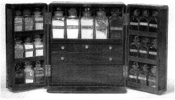

ŞEKİL 83. İngiliz yapımı, gezide ve evde kullanılabilecek, iki kanatlı ecza sandığı: İçinde çok çeşitli müshil türleri, ayrıca küçük el terazisi, pens vb. gereçler bulunmaktadır (~1850).61
19. yüzyıl ikinci yarısında Avrupa’da kullanılan ecza sandıklarında yer alan ilaçlar arasında şunlardan söz edilebilir (alfabetik sırada): “Acı tuz” (magnezyum sülfat), afyon damlası, aptesbozan otu tentürü, arapsakızı, bakır sülfat, bal, baldıran kökü, belsoğukluğu tozu, “beyaz vitriyol” (çinko sülfat), “cehennem taşı” (gümüş nitrat), civalı hap, civa tozu (tatlı sülümen, kalomel, Hg2Cl2), civa yakısı, demirhindi, diş damlası, fesleğen, “geyik boynuzu damlası” (“spiritus cornu cervis”), “Glauber tuzu” (sodyum sülfat), göğüs yumuşatıcı çay, göz suyu, gri ve kırmızı civa merhemleri, hardal tozu, “Hoffmann’ın eliksiri” (lokman ruhu), “İngiliz tuzu” (“Epsom tuzu” / laksatif tuz / müshil tuz / magnezyum sülfat), ishal tozu, iskorbüt damlası, İspanyol sineği yakısı, kabartma tozu, Jalapa tozu, kâfur ruhu (kâfurun alkoldeki çözeltisi), kâfur tozu, kâfur yağı, kan temizleyici çay, karın guruldamasına karşı ot, kav, ketentohumu, ketentohumu unu, kınakına kabuğu, kinin tozu (kinin sülfat), kollodyum, kolofonyum (çam ağacından terementi yağı ile özütlenen saydam ve sarı renkli reçine), aksülümen (korosif süblime, HgCl2), krem tartar (şaraptaşı), hintyağı, kurşun özütü (kurşun asetat), kurtbağrı / yakı ağacı merhemi, kusturucu toz (ipeka ya da emetik tartar), kükürt çiçeği (toz kükürt), leylak, magnezya (magnezyum karbonat ya da magnezyum oksit), merhem, mide çayı, mide eliksiri, mide için damla, mür tentürü, nane damlası, nane yağı, kezzap (nitrik asit), papatya, ravent tozu, salmiyak (nışadır), “salmiyak ruhu” (sulu amonyak), seyreltik zaçyağı (sülfürik asit), sinameki yaprağı, sindirici merhem, şap, tuz ruhu (hidroklorik asit), uçucu liniment (sıvı ovma kremi), uyuz merhemi, uyuz tozu, yakı, yapışkan yakı (İng. “plaster”), yara balsamı, yara merhemi, yara suyu, yumuşatıcı ot. Ecza sandığında ayrıca, yara sarma malzeme ve gereçleri olarak apse neşteri, fırça, güderi, hacamat bıçağı ya da neşteri ve bandı, hacamat şişesi, İngiliz yakısı, kaşık, keten bez, kulak şırıngası, küçük şırınga, makas, pamuk, pens, spatula, tıraş bıçağı, tiftiklenmiş bez, yara bezi, yara ipliği, yulaf ezmesi gibi malzemeler de bulunurdu.156